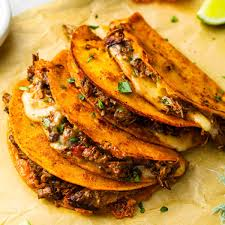

Tacos
Home

Description
Originates from Jalisco, Mexico Birria is a taco made with goat meat paired with a flavorful stew
Birria seasonings vary greatly and depend not just on the regional style of birria you’re making but also on the cook. There are simple recipes that only call for some chiles and avocado leaves to more complex recipes that require many types of herbs and spices along with a variety of chiles.
However you may choose to make it the result will be a punch of delicious flavors.
Ingredients
- 4 kilos of beef
- 8 guajillo chiles
- 6 pasilla chiles
- 2 árbol chiles
- 1 whole onion
- 4 bay leaves
- 4 whole peppercorns
- 3 cloves
- 1 teaspoon of oregano
- 1 teaspoon of whole cumin
- 2 teaspoons of vinegar
- 1 small piece of ginger
- 3 tablespoons of chicken bouillon
Steps
- Beef.
- In a medium pot, add water up to halfway.
- Cut the beef into medium-sized pieces.
- In the pot, along with the beef pieces, add a whole onion and a head of garlic... let it cook for two hours.
- Lightly toast the chiles in a pan with oil (not too much to avoid burning them) to enhance the flavor.
- Now, place the chiles in a small pot on the stove with water until they become soft.
- Place all the ingredients, vinegar, and chiles in a blender.
- Blend until smooth.
- Once the meat is tender, add the blended chile and let it cook for an hour and a half.
- I dipped the tortillas in the beef broth to make my tacos tastier.
- Add beef broth, onion, and cilantro to your tacos for better flavor.
- And in a small cup, add broth with onion and cilantro.